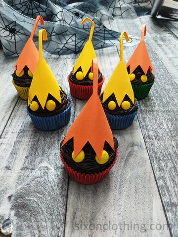
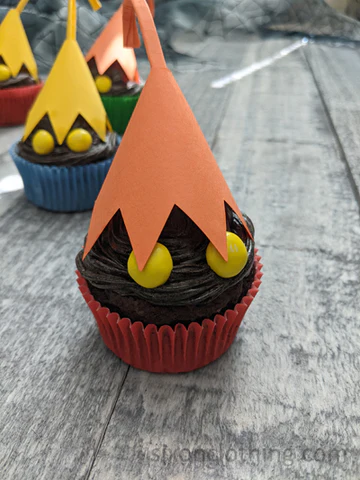

>>Main Menu
Nocturne Cupcakes

Description
Try these delectably dark Nocturne Cupcakes! How could something so cute and delicious be Heartless?
Ingredients
- 1 15.25oz boxed chocolate cake mix
- 1 cup Greek Yogurt
- 1 Cup water
- 8oz butter, softened (2 sticks)
- 2 cupspowdered sugar
- 1/2 cupblack cocoa powder
- 1 tsp vanilla extract
- Red, blue, yellow, and green cupcake liners
- Yellow M&M's
- Yellow and orange colored paper
Directions
- Preheat oven to 350 degrees. In a large bowl, mix Greek yogurt and water. Add the boxed chocolate cake mix and mix thoroughly.
- Line a cupcake pan with cupcake liners (use red, blue, yellow, and green for the Heartless Nocturne). Fill each cup with batter about 2/3 full. Bake for 15 - 18 minutes.
- In a large bowl, use a hand mixer and beat the softened butter for one minute until light and fluffy.
- Add powdered sugar, cocoa powder, and vanilla extract. Beat again to mix.
- Turn hand mixer off and use a spoon to gently mix everything thoroughly. Frosting will darken as the cocoa oxidizes.
- Craft construction paper into a hat shape
- Pipe the frosting onto the cupcake
- Carefully place the yellow M&M's as the eyes and the hat on top. Now you have a Nocturne Heartless cupcake! Decorate it further by adding the heartless emblem!
